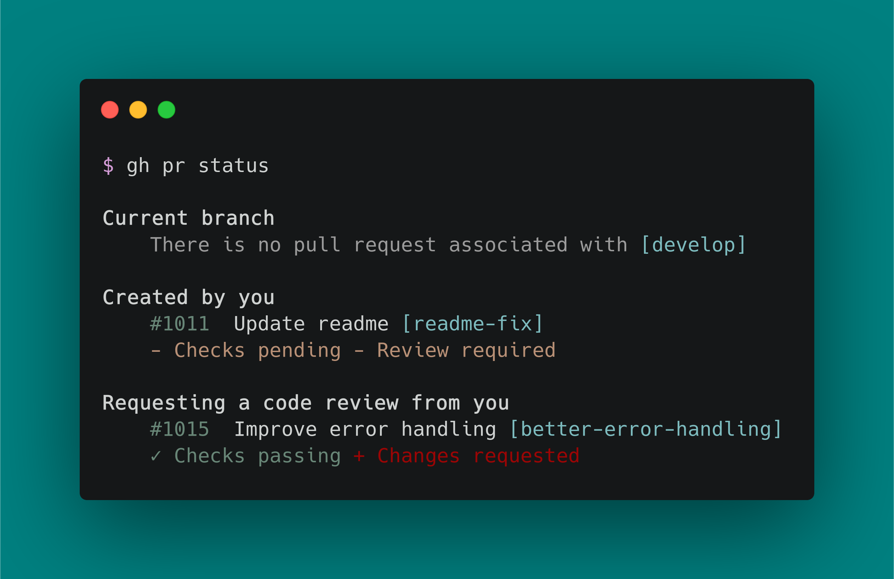
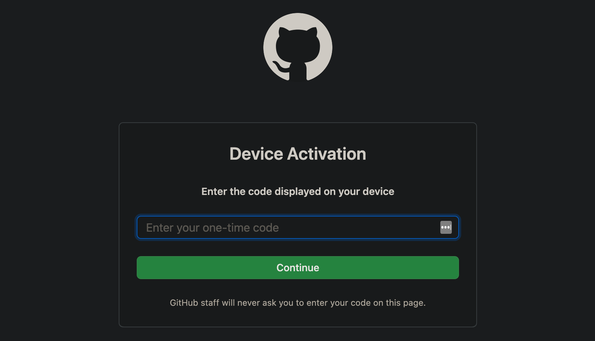

带你打开 GitHub 之门的全新方式

1. 工具介绍
官方推出的新一代 GitHub 命令行操作工具
自从微软收购了 Github 之后，相继推出了挺多的新功能和新特性，我自己使用一些，总的来说还是很不多的，大部分都很适用而且学习成本比较低、很容易上手和使用。而这里我们主要介绍的是 GitHub CLI 工具，这是 Github 官方推出了一个便捷操作 Github 的工具，助于减少终端和 GitHub 网页之间频繁切换。可以帮助我们直接在命令行完成 issues 查看、分支推送等操作。经过 6 个月的非常成功的 Beta 测试，已经发布了第一个稳定版本 GitHub CLI 1.0 了，就在前几天又发布了 GitHub CLI 1.0。
- GitHub CLI
- Take GitHub to the command line
- 官方推出的新一代
GitHub 命令行操作工具
- GitHub Actions
- Automate from code to cloud
- 一个轻量级的自动化
CI/CD 工具
- GitHub Apps
- More ways to work with GitHub
- 一个多终端操作
GitHub 的手机软件
- GitHub Packages
- Your packages at home with their code
- 一个包托管服务，允许开发者在上面托管包和代码，类似
npm、docker 等
2. 安装说明
GitHub’s official command line tool
安装完毕之后，会有一个 gh 的可执行命令，我们可以理解其是命令行版本的 GitHub。它可以获取 pull requests、issues 和其他 GitHub 的相关操作。
$ brew update && brew install gh
$ brew update && brew upgrade gh
$ sudo port install gh
$ sudo port selfupdate && sudo port upgrade gh
$ sudo apt-key adv --keyserver keyserver.ubuntu.com --recv-key C99B11DEB97541F0
$ sudo apt-add-repository https://cli.github.com/packages
$ sudo apt update
$ sudo apt install gh
$ sudo dnf config-manager --add-repo https://cli.github.com/packages/rpm/gh-cli.repo
$ sudo dnf install gh
$ scoop bucket add github-gh https://github.com/cli/scoop-gh.git
$ scoop install gh
3. 使用细节
上手指南，防止翻车！
- 安装之后执行
gh 命令，看到如下所示的信息就证明已经安装完成了。
➜ gh
Work seamlessly with GitHub from the command line.
USAGE
gh <command> <subcommand> [flags]
CORE COMMANDS
gist: Manage gists
issue: Manage issues
pr: Manage pull requests
release: Manage GitHub releases
repo: Create, clone, fork, and view repositories
ADDITIONAL COMMANDS
alias: Create command shortcuts
api: Make an authenticated GitHub API request
auth: Login, logout, and refresh your authentication
completion: Generate shell completion scripts
config: Manage configuration for gh
help: Help about any command
FLAGS
--help Show help for command
--version Show gh version
EXAMPLES
$ gh issue create
$ gh repo clone cli/cli
$ gh pr checkout 321
ENVIRONMENT VARIABLES
See 'gh help environment' for the list of supported environment variables.
LEARN MORE
Use 'gh <command> <subcommand> --help' for more information about a command.
Read the manual at https://cli.github.com/manual
FEEDBACK
Open an issue using 'gh issue create -R cli/cli'
- 在我们第一次使用
gh 命令的时候，需要登录进行一次 GitHub 的授权，点击授权即可。
➜ gh auth login
? What account do you want to log into? GitHub.com
- Logging into github.com
? How would you like to authenticate? Login with a web browser
! First copy your one-time code: XXXX-XXXX
- Press Enter to open github.com in your browser...
✓ Authentication complete. Press Enter to continue...
? Choose default git protocol SSH
- gh config set -h github.com git_protocol ssh
✓ Configured git protocol
✓ Logged in as EscapeLife

- 但是使用
gh 命令没有终端补全，所以其提供了一个子命令可以帮助我们补全命令！
eval "$(gh completion -s bash)"
eval "$(gh completion -s zsh)"
4. 相关命令
注意子命令的使用方式和使用技巧
Github Cli 命令分为核心命令和扩展命令两种，核心命令就是我们登录之后日常会常常使用的命令，而扩展命令就是平常提交代码等不太会使用的，谁天天会登录呢。
CORE COMMANDS
gist: Manage gists
issue: Manage issues
pr: Manage pull requests
release: Manage GitHub releases
repo: Create, clone, fork, and view repositories
ADDITIONAL COMMANDS
alias: Create command shortcuts
api: Make an authenticated GitHub API request
auth: Login, logout, and refresh your authentication
completion: Generate shell completion scripts
config: Manage configuration for gh
help: Help about any command
4.1 repo
Create, clone, fork, and view repositories
| 子命令 |
对应内容 |
gh repo clone |
在本地克隆 repo |
~/Projects/my-project$ gh repo clone https://github.com/cli/cli
Cloning into 'cli'...
remote: Enumerating objects: 99, done.
remote: Counting objects: 100% (99/99), done.
remote: Compressing objects: 100% (76/76), done.
remote: Total 21160 (delta 49), reused 35 (delta 18), pack-reused 21061
Receiving objects: 100% (21160/21160), 57.93 MiB | 10.82 MiB/s, done.
Resolving deltas: 100% (16051/16051), done.
| 子命令 |
对应内容 |
gh repo create |
创建一个新的 repo |
~/Projects/my-project$ gh repo create my-cool-project
✓ Created repository user/my-cool-project on GitHub
✓ Added remote https://github.com/user/my-cool-project.git
~/Projects/my-project$ gh repo create org/repo
✓ Created repository org/repo on GitHub
✓ Added remote https://github.com/org/repo.git
| 子命令 |
对应内容 |
gh repo fork |
创建 repo 的 fork |
~/Projects$ gh repo fork cli/cli
- Forking cli/cli...
✓ Created fork cli/cli
? Would you like to clone the fork? Yes
Cloning into 'cli'...
✓ Cloned fork
| 子命令 |
对应内容 |
gh repo view |
查看 repo |
~/Projects/my-project$ gh repo view owner/repo
owner/repo
Repository description
Repository README
View this repository on GitHub: https://github.com/owner/repo/
~/Projects/my-project$
~/Projects$ gh repo view owner/repo --web
Opening https://github.com/owner/repo/ in your browser.
4.2 pr
Manage pull requests
| 子命令 |
对应内容 |
gh pr checkout |
在 git 中查看拉取请求 |
~/Projects/my-project$ gh pr checkout 12
remote: Enumerating objects: 66, done.
remote: Counting objects: 100% (66/66), done.
remote: Total 83 (delta 66), reused 66 (delta 66), pack-reused 17
Unpacking objects: 100% (83/83), done.
From https://github.com/owner/repo
* [new ref] refs/pull/8896/head -> patch-2
M README.md
Switched to branch 'patch-2'
~/Projects/my-project$ gh pr checkout branch-name
Switched to branch 'branch-name'
Your branch is up to date with 'origin/branch-name'.
Already up to date.
| 子命令 |
对应内容 |
gh pr checks |
显示单个 pr 请求的状态 |
~/Projects/my-project$ gh pr checks master
no open pull requests found for branch "master"
| 子命令 |
对应内容 |
gh pr close |
关闭 pull 请求 |
$ gh pr close {<number> | <url> | <branch>} [flags]
| 子命令 |
对应内容 |
gh pr create |
创建一个 pull 请求 |
~/Projects/my-project$ gh pr create
Creating pull request for feature-branch into main in owner/repo
? Title My new pull request
? Body [(e) to launch nano, enter to skip]
http://github.com/owner/repo/pull/1
~/Projects/my-project$ gh pr create --title "Pull request title" --body "Pull request body"
http://github.com/owner/repo/pull/1
~/Projects/my-project$ gh pr create --web
Opening https://github.com/owner/repo/pull/branch in your browser.
| 子命令 |
对应内容 |
gh pr diff |
在 pull 请求中查看更改 |
$ gh pr diff [<number> | <url> | <branch>] [flags]
| 子命令 |
对应内容 |
gh pr list |
列出并过滤此 repo 中的 pull 请求 |
~/Projects/my-project$ gh pr list
Pull requests for owner/repo
14 Upgrade to Prettier 1.19 prettier
14 Extend arrow navigation in lists for MacOS arrow-nav
13 Add Support for Windows Automatic Dark Mode dark-mode
8 Create and use keyboard shortcut react component shortcut
$ gh pr list --limit 999
$ gh pr list --state closed
$ gh pr list --label "priority 1" --label "bug"
$ gh pr list --web
| 子命令 |
对应内容 |
gh pr merge |
合并 pull 请求 |
$ gh pr merge [<number> | <url> | <branch>] [flags]
| 子命令 |
对应内容 |
gh pr ready |
将一个 pull request 标记为准备好接受审查 |
$ gh pr ready [<number> | <url> | <branch>] [flags]
| 子命令 |
对应内容 |
gh pr reopen |
重新打开 pull 请求 |
$ gh pr reopen {<number> | <url> | <branch>} [flags]
| 子命令 |
对应内容 |
gh pr review |
向 pull 请求添加审查 |
$ gh pr review --approve
$ gh pr review --comment -b "interesting"
$ gh pr review 123
$ gh pr review 123 -r -b "needs more ASCII art"
| 子命令 |
对应内容 |
gh pr status |
显示相关 pull 请求的状态 |
~/Projects/my-project$ gh pr status
Current branch
- All checks failing - Review required
Created by you
You have no open pull requests
Requesting a code review from you
- 3/4 checks failing - Review required
- Checks passing - Approved
| 子命令 |
对应内容 |
gh pr view |
查看 pull 请求 |
~/Projects/my-project$ gh pr view 21
Pull request title
opened by user. 0 comments. (label)
Pull request body
View this pull request on GitHub: https://github.com/owner/repo/pull/21
~/Projects/my-project$ gh pr view 21 --web
Opening https://github.com/owner/repo/pull/21 in your browser.
4.3 issue
Manage issues
| 子命令 |
对应内容 |
gh issue close |
关闭 issue |
$ gh issue close {<number> | <url>} [flags]
| 子命令 |
对应内容 |
gh issue create |
创建一个新的 issue |
$ gh issue create --title "I found a bug" --body "Nothing works"
$ gh issue create --label "bug,help wanted"
$ gh issue create --label bug --label "help wanted"
$ gh issue create --assignee monalisa,hubot
$ gh issue create --project "Roadmap"
| 子命令 |
对应内容 |
gh issue list |
列出并过滤此 repo 中的 issue |
$ gh issue list -l "help wanted"
$ gh issue list -A monalisa
$ gh issue list --web
$ gh issue list --milestone 'MVP'
$ gh issue list --state closed --assignee user
| 子命令 |
对应内容 |
gh issue reopen |
重开 issus |
$ gh issue reopen {<number> | <url>} [flags]
| 子命令 |
对应内容 |
gh issue view |
查看 issue |
~/Projects/my-project$ gh issue view 21
Issue title
opened by user. 0 comments. (label)
Issue body
View this issue on GitHub: https://github.com/owner/repo/issues/21
~/Projects/my-project$ gh issue view 21 --web
Opening https://github.com/owner/repo/issues/21 in your browser.
| 子命令 |
对应内容 |
gh issue status |
显示相关 issue 的状态 |
~/Projects/my-project$ gh issue status
Issues assigned to you
Issues mentioning you
Issues opened by you
4.4 release
Manage GitHub releases
| 子命令 |
对应内容 |
gh release create |
创建一个版本 |
$ gh release create v1.2.3 -F changelog.md
$ gh release create v1.2.3 '/path/to/asset.zip#My display label'
| 子命令 |
对应内容 |
gh release delete |
删除一个版本 |
$ gh release delete <tag> [flags]
| 子命令 |
对应内容 |
gh release download |
下载一个版本 |
$ gh release download v1.2.3
$ gh release download --pattern '*.deb'
$ gh release download -p '*.deb' -p '*.rpm'
| 子命令 |
对应内容 |
gh release list |
列出存储库中的发布 |
$ gh release list [flags]
| 子命令 |
对应内容 |
gh release upload |
上传一个版本 |
$ gh release upload <tag> <files>... [flags]
| 子命令 |
对应内容 |
gh release view |
查看版本的详细信息 |
$ gh release view [<tag>] [flags]
4.5 gist
Manage gists
| 子命令 |
对应内容 |
gh gist create |
创建一个 gist |
$ gh gist create --public hello.py
$ gh gist create hello.py -d "my Hello-World program in Python"
$ gh gist create hello.py world.py cool.txt
$ gh gist create -
$ cat cool.txt | gh gist create
| 子命令 |
对应内容 |
gh gist edit |
编辑一个 gist |
$ gh gist edit {<gist ID> | <gist URL>} [flags]
| 子命令 |
对应内容 |
gh gist list |
查看 gists |
$ gh gist list [flags]
| 子命令 |
对应内容 |
gh gist view |
查看 gist 内容 |
$ gh gist view {<gist id> | <gist url>} [flags]
4.6 auth
Login, logout, and refresh your authentication
| 子命令 |
对应内容 |
gh auth login |
使用 GitHub 主机进行身份验证 |
$ gh auth login
$ gh auth login --with-token < mytoken.txt
$ gh auth login --hostname enterprise.internal
| 子命令 |
对应内容 |
gh auth logout |
注销 GitHub 主机 |
$ gh auth logout
$ gh auth logout --hostname enterprise.internal
| 子命令 |
对应内容 |
gh auth refresh |
刷新存储的身份验证凭据 |
$ gh auth refresh --scopes write:org,read:public_key
$ gh auth refresh
| 子命令 |
对应内容 |
gh auth status |
查看认证状态 |
$ gh auth status [flags]
4.7 alias
Create command shortcuts
| 子命令 |
对应内容 |
gh alias delete |
删除 alias 命令 |
$ gh alias delete <alias> [flags]
| 子命令 |
对应内容 |
gh alias list |
列出 alias 命令 |
$ gh alias list [flags]
| 子命令 |
对应内容 |
gh alias set |
设置 alias 命令 |
$ gh alias set pv 'pr view'
$ gh pv -w 123
$ gh alias set bugs 'issue list --label="bugs"'
$ gh alias set epicsBy 'issue list --author="$1" --label="epic"'
$ gh epicsBy vilmibm
$ gh alias set --shell igrep 'gh issue list --label="$1" | grep $2'
$ gh igrep epic foo
4.8 config
Manage configuration for gh
| 子命令 |
对应内容 |
gh config get |
获取 alias 命令 |
$ gh config get git_protocol
https
| 子命令 |
对应内容 |
gh config set |
用给定键的值更新配置 |
$ gh config set editor vim
$ gh config set editor "code --wait"
$ gh config set git_protocol ssh
$ gh config set prompt disabled